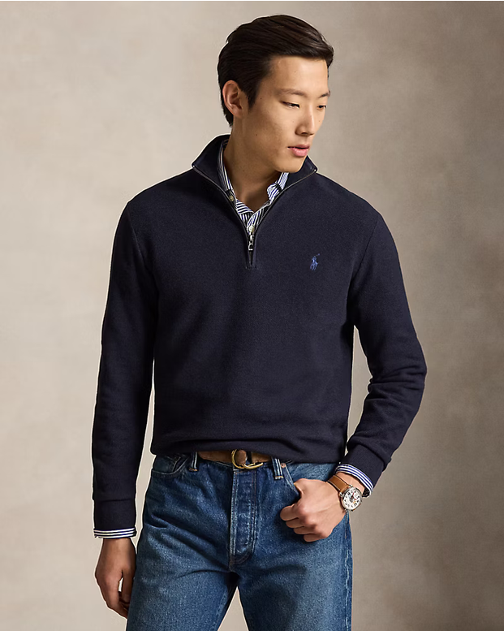
Blaues Sip
Ein tiefes Blau, ruhig und zeitlos.
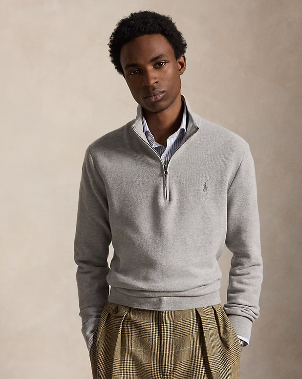
Graues Sip
Dezentes Grau für jeden Tag.
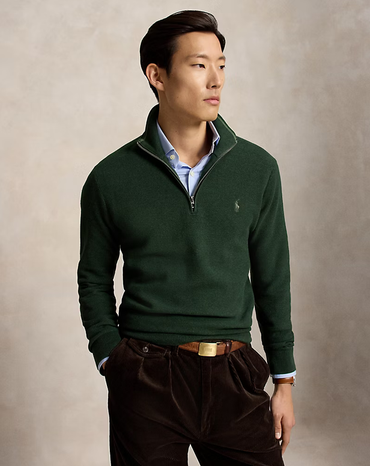
Grünes Sip
Waldgrün, weich und warm.
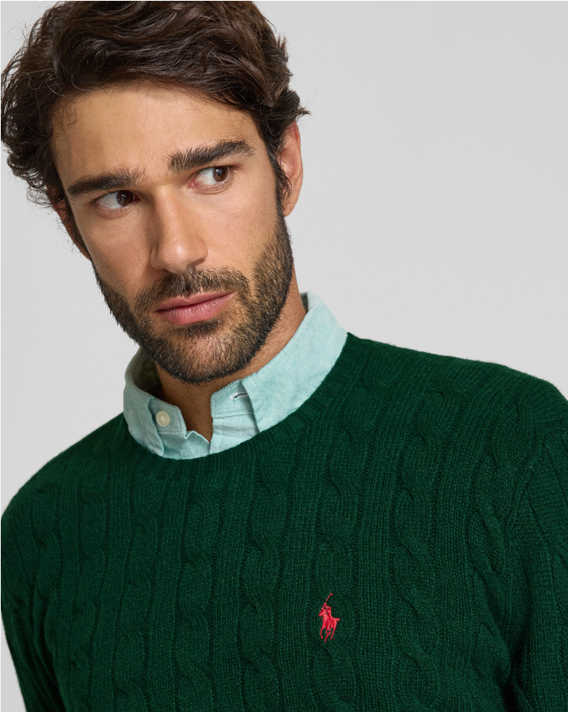
Pullover Grün Zöpfe
Klassischer Zopfstrick in sattem Grün.
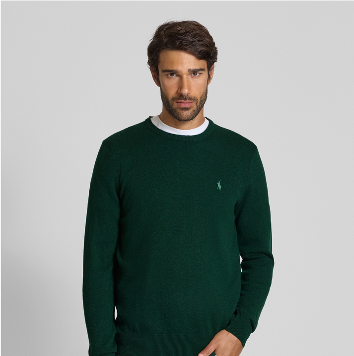
Pullover Grün
Schlicht und gemütlich, zum Wohlfühlen.
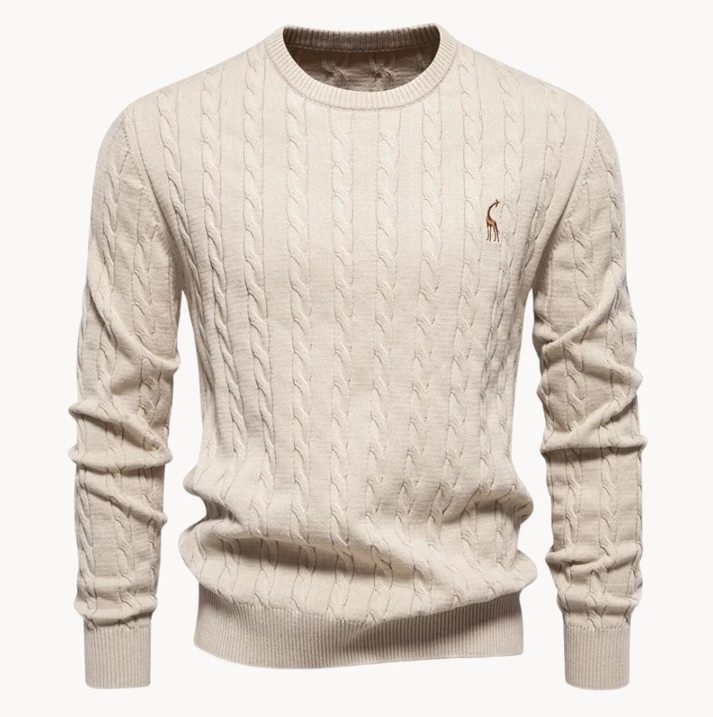
Pullover Grau Zöpfe
Zopfstrick in sanftem Grau.
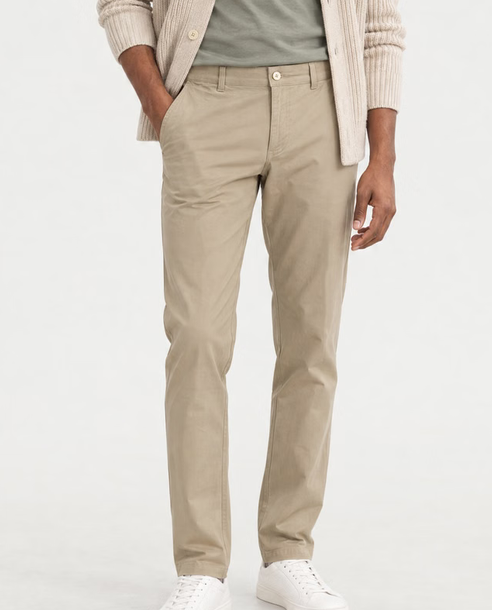
Hose beige
Heller Ton, ruhige Linie.
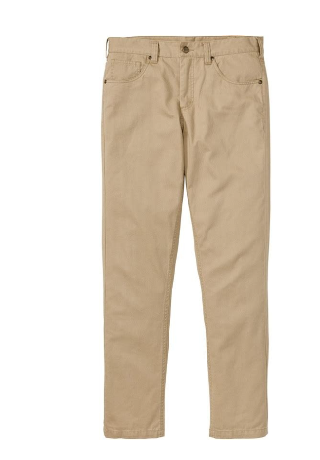
Hose beige 2
Dieselbe Farbe, ein zweiter Blick.
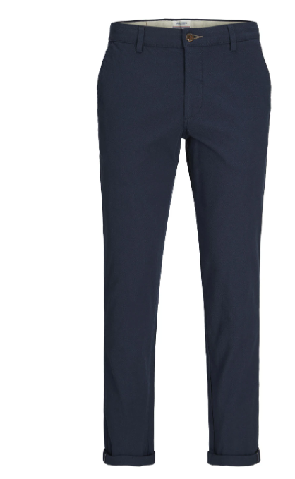
Hose blau
Dunkles Blau, klar und elegant.
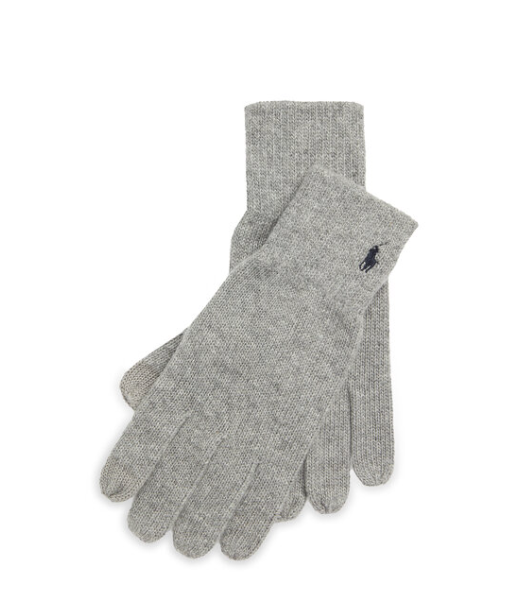
Handschuhe grau
Ein feines Detail für kalte Tage.
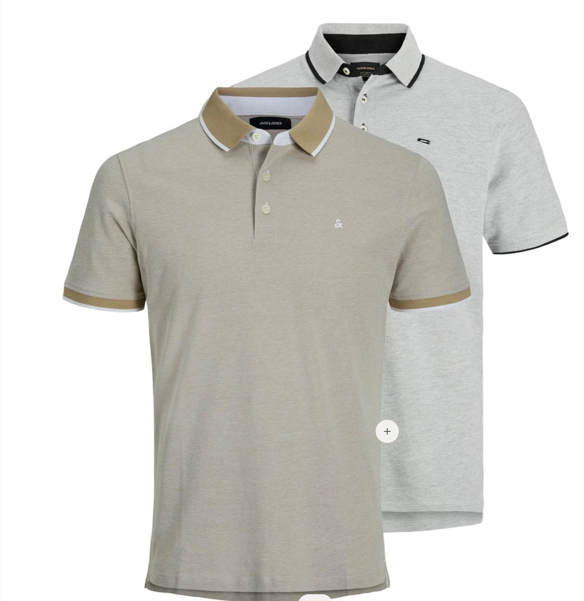
Polo Shirt Grau beige
Grau und Beige, leise kombiniert.
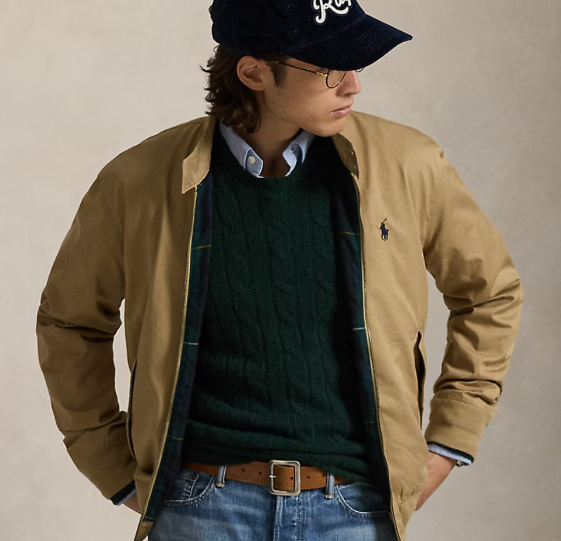
Jacke beige
Grün und Beige, leise kombiniert.
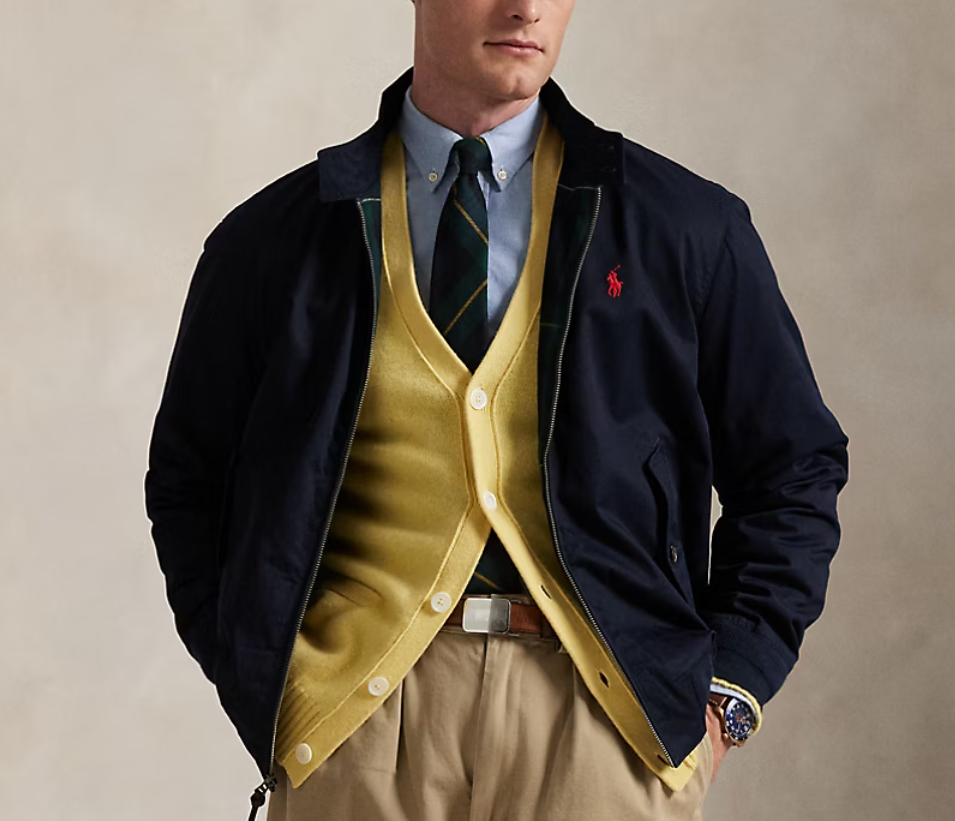
Jacke Blau
schönes unauffälliges Blau.
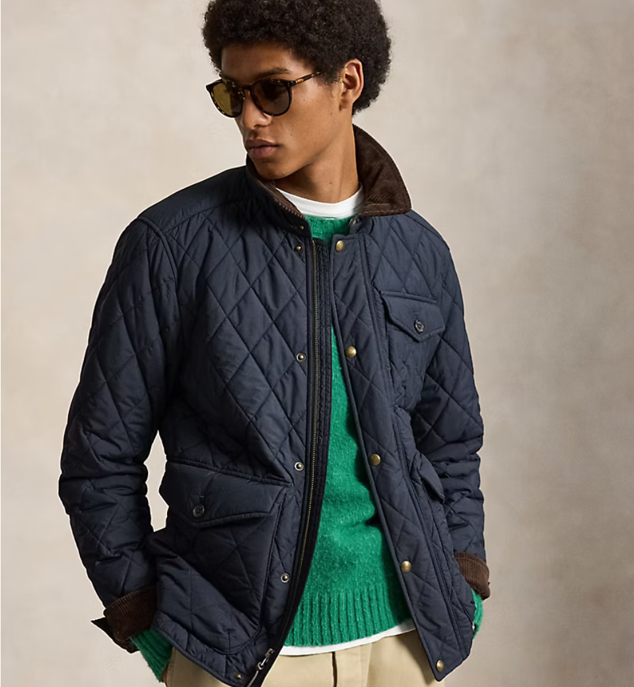
Steppjacke Blau
Etwas anderes.